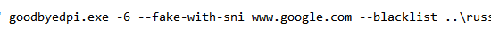

Сразу скажу что я прочитал большую часть форума в поисках решения проблемы. Грузится около 30% из того что я пытаюсь посмотреть. Видео разные, российские и не российские. Оба видео на сркинах российские.
Вводные:
-
rc3-2 GoodbyeDPI
-
DNS NextDNS в роутере
-
kyber Disabled
-
QUIC Default или Disabled
-
GoogleChrome браузер
-
Провайдер Мэлт Интернет
-
https://redirector.googlevideo.com/report_mapping?di=no rostelecom-kzn2
-
Попадающие в 403 Get Запросы идут на (rr5---sn-q4flrn7r.googlevideo.com, rr4---sn-q4flrnsl.googlevideo.com (американские, пингуются) и rr2---sn-gvnuxaxjvh-31ol.googlevideo.com, rr12---sn-gvnuxaxjvh-bvwz.googlevideo.com (ростелекомовские, пингуются))
-
Видео которое не грузится
-
Видео которое грузится
-
Без GoodbyeDPI, видео которое не грузится
-
Пробовал все различные варианты запуска GoodByeDPI которые популярны как фиксы проблем (изменение -1 - -9, -q -e1 -e2 и т.д.)
{kind=link}
{kind=link}
{kind=link}
Выглядит так что эти бросания 403 не влияют на загрузку видео, так как в обоих случаях бросаются.
Я пробовал в Ublock блочить все ростелекомовские адреса, из-за этого видео которое работает грузилось дольше, что логично.
Сейчас использую -e1 --reverse-frag, но в целом неважно какие настройки поставить поведение одинаковое.
Буду рад любой помощи.
С ошибками 403 ниче не сделать, по моему опыту. Но у вас помимо 403 там ещё ошибки с таймаутом.
С включенным gdpi в командной строке сделайте вот так, чтобы проверить что у вас в принципе коннект есть:
curl -sv -o NUL https://rr2---sn-gvnuxaxjvh-31ol.googlevideo.com/
curl -sv -o NUL https://rr12---sn-gvnuxaxjvh-bvwz.googlevideo.com/
Случайно увидел что одному человеку помог ЮБуст - в моей ситуации он заработал. Хотя раньше (где-то в августе) Юбуст мне ничем не помогал. Однако тема с проблемой наверно всё еще можно считать актуальной.
Ну так юбуст это впн.
{kind=link}
{kind=link}
Соединение у вас повисает, я так понимаю, учитывая что скриншот короткий? Это значит хэндшейка нет.
Попробуйте, например, вот такие параметры:
goodbyedpi.exe -e 2 -f 2 --wrong-seq --reverse-frag --fake-from-hex 16030301370100013303038744d596d5e166b59b26a220fd6b02290b1c4ab52fdd065686d3c554eeeec80e202e64ac10ffb2410d07f605bdb7ff47f94b7280a30c215ab8ba1924a29b104a15005c130213031301c030c02cc028c024c014c00a009f006b0039cca9cca8ccaa00c40088009d003d003500c00084c02fc02bc027c023c013c009009e0067003300be0045009c003c002f00ba0041c011c0070005c012c0080016000a00ff0100008e000d0018001608060601060308050501050308040401040302010203002b00050403040303003300260024001d0020c5dfc61b4b53a1eb0441db0077c51d3ee7a127ad4a007fc96ff62cbcd94a9231000a000a0008001d00170018001900000015001300001065617274682e676f6f676c652e636f6d000b000201000010000e000c02683208687474702f312e31 --blacklist ..\russia-blacklist.txt --blacklist ..\russia-youtube.txt
Потом повторите эксперимент с курлом.
{kind=link}
Сейчас так, но мб я в прошлый раз просто не дождался
А если так?
-e1 -f2 --reverse-frag --wrong-seq --fake-gen 5 --fake-from-hex 160301FFFF01FFFFFF0303594F5552204144564552544953454D454E542048455245202D202431302F6D6F000000000009000000050003000000 --blacklist ..\russia-blacklist.txt --blacklist ..\russia-youtube.txt
Проверьте оба адреса курлом, если можете. Один из них в Казани, а другой в Нижнем Новгороде, хотя оба ростелекомовские. Возможно они через разные коробки проходят.
Я бы вам посоветовал открыть отдельное окно с комстрокой от админа и после каждого закрытия проги с нерабочим конфигом выполнять там
sc stop windivert
sc delete windivert
Чтобы драйвер сетевых пакетов не перекосойопило от частых перезапусков проги
Тоже самое
А второй адрес?
Оба. Как в первом скрине пишет Connected, потом висит
Делал, но разницы не заметил, поведение всегда одинаково
Так быть не должно, это означает что у вас соединение в принципе не проходит. Т.е. вас успешно останавливает блокировка.
Ещё есть варианты:
-e2 --reverse-frag -q --blacklist ..\russia-blacklist.txt --blacklist ..\russia-youtube.txt
-e2 --native-frag -q --blacklist ..\russia-blacklist.txt --blacklist ..\russia-youtube.txt
Закрой хостами ggc которые 403 и посмотри ситуацию.
- Пробовал все различные варианты запуска GoodByeDPI которые популярны как фиксы проблем (изменение -1 - -9, -q -e1 -e2 и т.д.)
Снова пресеты. Да сколько можно 
Так у него хэндшейк до ростелекомовских ggc не проходит. Те что 403 погоды ему, фактически, не делают.
Все это было уже в теме по каспий-телеком, ребята просто идут по второму кругу. Изменится ли результат - самому интересно, наблюдаю )
А мне интересно, какую стратегию предложит zapret (если вообще предложит), или можно ли ее переделать под gdpi? Подбор рабочего конфига для GGC ютуба через blockcheck
Безуспешно. Всё тоже самое. Я и ребутнулся, и попробавл какой нибудь -6, без рзаницы. Всё как на первом скрине. Обычный Ping при этом работает
Писал в шапке. Результат - видео грузится дольше (которое грузится)
Какой -6? У вас там должно быть в файле написано:
start "" goodbyedpi.exe -e2 --reverse-frag -q --blacklist ..\russia-blacklist.txt --blacklist ..\russia-youtube.txt
Я и ваш попробовал, и свой рандомный
Вы уверены что у вас гудбай сервисом не установлен с другими параметрами? А то тут были случаи, когда вписывают в одно место, а запускают из другого.
Тоже вариант. Еще добавлю, что ноунеймы на своих серваках любят баловаться маршрутизацией пакетов по маске на какой-нибудь нерабочий IP, так что вполне можно попробовать и -r -s -m
Никсы системы точные, таких шуток не прощают и правила идут нафиг )
Но если перебанили по IP, которые у GGC постоянные - то это печаль и фиаско. Но вроде там еще много чего висит, так что вряд ли.
Запускаю тот же что и изменяю. Кстати на ютубе всё также – видосы грузятся и не грузятся. Юбуст я разумеется оффнул
А, вы про сервис. Удалял ремувом, проверял сервисы в диспетчере – там только один который запускаю я сам
Не знаю тогда. Можете попробовать вариант с блокчеком, который вам выше посоветовали. Он автоматом ищет рабочую стратегию.
За ЮБуст просто тоже рано или поздно возьмутся. Лучше иметь несколько альтернативных вариантов.
Спасибо за попытку
Для эксперимента, попробуйте ещё с выключенным gdpi в обоих случаях:
curl -sv -o NUL https://yandex.com --connect-to ::rr12---sn-gvnuxaxjvh-bvwz.googlevideo.com --resolve rr12---sn-gvnuxaxjvh-bvwz.googlevideo.com:443:213.59.237.159
и вот так:
curl -sv -o NUL https://www.google.com --connect-to ::rr12---sn-gvnuxaxjvh-bvwz.googlevideo.com --resolve rr12---sn-gvnuxaxjvh-bvwz.googlevideo.com:443:213.59.237.159
В первом случае соединение должно просто повиснуть. Интересует второй скорее.
И куда тут смотреть? Что должно показать?
Спойлер
`D:\Distrib\Curl>curl -sv -o NUL https://yandex.com --connect-to ::rr12—sn-gvnuxaxjvh-bvwz.googlevideo.com --resolve rr12—sn-gvnuxaxjvh-bvwz.googlevideo.com:443:213.59.237.159
- Added rr12—sn-gvnuxaxjvh-bvwz.googlevideo.com:443:213.59.237.159 to DNS cache
- Connecting to hostname: rr12---sn-gvnuxaxjvh-bvwz.googlevideo.com
- Hostname rr12---sn-gvnuxaxjvh-bvwz.googlevideo.com was found in DNS cache
- Trying 213.59.237.159:443…
- Connected to rr12---sn-gvnuxaxjvh-bvwz.googlevideo.com (213.59.237.159) port 443
- ALPN: curl offers h2,http/1.1
- TLSv1.3 (OUT), TLS handshake, Client hello (1):
} [305 bytes data] - CAfile: D:\Distrib\Curl\curl-ca-bundle.crt
- CApath: none
- TLSv1.3 (IN), TLS handshake, Server hello (2):
{ [122 bytes data] - TLSv1.3 (IN), TLS handshake, Unknown (8):
{ [6 bytes data] - TLSv1.3 (IN), TLS handshake, Certificate (11):
{ [4442 bytes data] - TLSv1.3 (IN), TLS handshake, CERT verify (15):
{ [264 bytes data] - TLSv1.3 (IN), TLS handshake, Finished (20):
{ [52 bytes data] - TLSv1.3 (OUT), TLS handshake, Finished (20):
} [52 bytes data] - SSL connection using TLSv1.3 / TLS_AES_256_GCM_SHA384 / [blank] / UNDEF
- ALPN: server did not agree on a protocol. Uses default.
- Server certificate:
- subject: CN=*.googlevideo.com
- start date: Aug 27 14:31:19 2024 GMT
- expire date: Nov 5 14:31:18 2024 GMT
- subjectAltName does not match hostname yandex.com
- SSL: no alternative certificate subject name matches target hostname ‘yandex.com’
- closing connection #0
D:\Distrib\Curl>curl -sv -o NUL https://www.google.com --connect-to ::rr12—sn-gvnuxaxjvh-bvwz.googlevideo.com --resolve rr12—sn-gvnuxaxjvh-bvwz.googlevideo.com:443:213.59.237.159
- Added rr12—sn-gvnuxaxjvh-bvwz.googlevideo.com:443:213.59.237.159 to DNS cache
- Connecting to hostname: rr12---sn-gvnuxaxjvh-bvwz.googlevideo.com
- Hostname rr12---sn-gvnuxaxjvh-bvwz.googlevideo.com was found in DNS cache
- Trying 213.59.237.159:443…
- Connected to rr12---sn-gvnuxaxjvh-bvwz.googlevideo.com (213.59.237.159) port 443
- ALPN: curl offers h2,http/1.1
- TLSv1.3 (OUT), TLS handshake, Client hello (1):
} [309 bytes data] - CAfile: D:\Distrib\Curl\curl-ca-bundle.crt
- CApath: none
- TLSv1.3 (IN), TLS handshake, Server hello (2):
{ [122 bytes data] - TLSv1.3 (IN), TLS handshake, Unknown (8):
{ [6 bytes data] - TLSv1.3 (IN), TLS handshake, Certificate (11):
{ [4442 bytes data] - TLSv1.3 (IN), TLS handshake, CERT verify (15):
{ [264 bytes data] - TLSv1.3 (IN), TLS handshake, Finished (20):
{ [52 bytes data] - TLSv1.3 (OUT), TLS handshake, Finished (20):
} [52 bytes data] - SSL connection using TLSv1.3 / TLS_AES_256_GCM_SHA384 / [blank] / UNDEF
- ALPN: server did not agree on a protocol. Uses default.
- Server certificate:
- subject: CN=*.googlevideo.com
- start date: Aug 27 14:31:19 2024 GMT
- expire date: Nov 5 14:31:18 2024 GMT
- subjectAltName does not match hostname www.google.com
- SSL: no alternative certificate subject name matches target hostname ‘www.google.com’
- closing connection #0`
Это с выключенным gdpi? У тебя они видимо не заблочены, а просто замедлены. А у автора там вообще сбрасывается соединение.
В первом случае он коннектится к заблокированному у автора серверу, используя SNI yandex.com. А во втором - используя SNI www.google.com. На большинстве провайдеров хэндшейк проходит через блокировку, если домен из той же cdn что и гуглвидео. Ну а резолв добавлен на случай подмены dns.
Не много. Как минимум на GGC, что стоят у провайдеров, только googlevideo.com.
Тогда почему они их просто не отключат?
С включенным, но в блэклистах отсутствуют какие-либо домены гугла
У меня это вот так выглядит с выключенным gdpi.
C:\Users\1>curl -sv -o NUL https://www.google.com --connect-to ::rr12---sn-gvnuxaxjvh-bvwz.googlevideo.com --resolve rr12---sn-gvnuxaxjvh-bvwz.googlevideo.com:443:213.59.237.159
* Added rr12---sn-gvnuxaxjvh-bvwz.googlevideo.com:443:213.59.237.159 to DNS cache
* Connecting to hostname: rr12---sn-gvnuxaxjvh-bvwz.googlevideo.com
* Hostname rr12---sn-gvnuxaxjvh-bvwz.googlevideo.com was found in DNS cache
* Trying 213.59.237.159:443...
* Connected to rr12---sn-gvnuxaxjvh-bvwz.googlevideo.com () port 443
* ALPN: curl offers h2,http/1.1
* TLSv1.3 (OUT), TLS handshake, Client hello (1):
} [309 bytes data]
* CAfile: C:\Users\1\AppData\Local\Microsoft\WinGet\Packages\cURL.cURL_Microsoft.Winget.Source_8wekyb3d8bbwe\curl-8.10.0_1-win64-mingw\bin\curl-ca-bundle.crt
* CApath: none
* TLSv1.3 (IN), TLS handshake, Server hello (2):
{ [122 bytes data]
* TLSv1.3 (IN), TLS handshake, Unknown (8):
{ [6 bytes data]
* TLSv1.3 (IN), TLS handshake, Certificate (11):
{ [4442 bytes data]
* TLSv1.3 (IN), TLS handshake, CERT verify (15):
{ [264 bytes data]
* TLSv1.3 (IN), TLS handshake, Finished (20):
{ [52 bytes data]
* TLSv1.3 (OUT), TLS handshake, Finished (20):
} [52 bytes data]
* SSL connection using TLSv1.3 / TLS_AES_256_GCM_SHA384 / [blank] / UNDEF
* ALPN: server did not agree on a protocol. Uses default.
* Server certificate:
* subject: CN=*.googlevideo.com
* start date: Aug 27 14:31:19 2024 GMT
* expire date: Nov 5 14:31:18 2024 GMT
* subjectAltName does not match hostname www.google.com
* SSL: no alternative certificate subject name matches target hostname 'www.google.com'
* closing connection #0
C:\Users\1>curl -sv -o NUL https://yandex.com --connect-to ::rr12---sn-gvnuxaxjvh-bvwz.googlevideo.com --resolve rr12---sn-gvnuxaxjvh-bvwz.googlevideo.com:443:213.59.237.159
* Added rr12---sn-gvnuxaxjvh-bvwz.googlevideo.com:443:213.59.237.159 to DNS cache
* Connecting to hostname: rr12---sn-gvnuxaxjvh-bvwz.googlevideo.com
* Hostname rr12---sn-gvnuxaxjvh-bvwz.googlevideo.com was found in DNS cache
* Trying 213.59.237.159:443...
* Connected to rr12---sn-gvnuxaxjvh-bvwz.googlevideo.com () port 443
* ALPN: curl offers h2,http/1.1
* TLSv1.3 (OUT), TLS handshake, Client hello (1):
} [305 bytes data]
* CAfile: C:\Users\1\AppData\Local\Microsoft\WinGet\Packages\cURL.cURL_Microsoft.Winget.Source_8wekyb3d8bbwe\curl-8.10.0_1-win64-mingw\bin\curl-ca-bundle.crt
* CApath: none
* Connection timed out after 10012 milliseconds
* closing connection #0
Изначально был взят курс на “деградацию”. Чтобы оставить простор для рассуждений “Google ведь ушел, сервера больше не обслуживает, вот и работает через пень-колоду”. Если просто заблочить по аналогии со всем остальным, так сказать уже не получится.
Так “сервера деградировали окончательно и вырубились”, не? Вполне вписывается в курс
Еще рано. Это следующий этап. Вы опережаете события. Сразу они не могут “вырубиться”. Это было бы слишком подозрительно.
)) А события действительно лучше опережать, чтоб быть во всеоружии
Что-то вроде как с -s даже нельзясайты быстрее работают, хотя может показалось 
Оба висят
Попробуйте в файл hosts заблокировать адреса который не грузит в виде
127.0.0.1 rr5---sn-q4flrn7r.googlevideo.com
127.0.0.1 rr6---sn-q4flrn7r.googlevideo.com
И так далее
Коннект надо отсечь, а не перенаправить на localhost для этого используется 0.0.0.0
Что касается блокировок через hosts, которые вам выше советуют, это только 403 ошибок касается. Блокировка серваков вашего провайдера уберет ошибки с таймаутом, но те видосы что не грузились так и не будут грузиться.
Попробуйте в той команде, что я давал выше подсунуть другие сервисы гугла вместе www.google.com, например drive.google.com, www.google.ru, earth.google.com, mail.google.com, play.google.com, docs.google.com, chrome.google.com и т.д. Даже www.youtube.com можно попробовать. Надо чтобы оно не висело на хендшейке, а прошло. Если повисает - можно прервать нажав ctrl+C.
curl -sv -o NUL https://drive.google.com --connect-to ::rr12---sn-gvnuxaxjvh-bvwz.googlevideo.com --resolve rr12---sn-gvnuxaxjvh-bvwz.googlevideo.com:443:213.59.237.159
Попробуйте quic на enable поставить
Попробовал 2-3 варианта, всё без толку
Вот вам последние 2 варианта для gdpi. Если не поможет, то только блокчек zapret’а или ВПН, типа юбуста, как вы и используете. Больше идей нет.
- Первый:
goodbyedpi.exe -e2 -f2 --wrong-seq -q -p --reverse-frag --fake-from-hex 16030301360100013203032837d6aca49667a5014098827c19d2171776324a6025941a930e22ae5635a1ff209949670f5fbc0781b7258f5d6f71300f00f09ab4e04e48da4142b4233107de8f005c130213031301c030c02cc028c024c014c00a009f006b0039cca9cca8ccaa00c40088009d003d003500c00084c02fc02bc027c023c013c009009e0067003300be0045009c003c002f00ba0041c011c0070005c012c0080016000a00ff0100008d000a000a0008001d00170018001900000014001200000f646f63732e676f6f676c652e636f6d000d0018001608060601060308050501050308040401040302010203002b00050403040303000b00020100003300260024001d0020fea0f6f8b7ab1ce4f9c69a14fc25b5066ad4ad3a03e8d31a45017b5626b886020010000e000c02683208687474702f312e31 --blacklist ..\russia-blacklist.txt --blacklist ..\russia-youtube.txt - Второй:
goodbyedpi.exe -e2 -f2 --wrong-seq -q -p --reverse-frag --fake-from-hex 1603010200010001fc0303fa386cf58e99312f7caed7aa0862b38d125afbb7b43a856d26ca0750277a83a320cf4e4d60a34af94c4f37eae96076b40f201e77da1ba6e60aa43a325fbf33a5000020baba130113021303c02bc02fc02cc030cca9cca8c013c014009c009d002f0035010001932a2a0000002d0002010100120000001b0003020002000d0012001004030804040105030805050108060601ff01000100002b0007060a0a0304030300000015001300001064726976652e676f6f676c652e636f6d00230000446900050003026832000a000a00088a8a001d001700180033002b00298a8a000100001d0020227a86c914670d71f767156a2dbcc5441d7b30606b3ceef7774b0785d3633f2b000500050100000000fe0d00ba000001000171002080b1850737438e2b51a6f46ff37ee5889213714739ab4fcbe2af51c9b2f3490500900b1539600611b44553e6ab4b4c327e2daabd124851b3b8039a727b34c8ca07535cc8e22d03e5e6b0a66e78423a9064662bed5e247dd9ad8e31d24a549e5be27223d768920be91ae37508d7c692dd861d7a7172a23a32199883ed02f1dc7c9b61d9763d33014aabd6539346453d7e621ab3f392f2aacdc19055cde91a2c49a70ab5e5b4922a506bb66a49ad64f2fbb7cc000b00020100001700000010000e000c02683208687474702f312e31dada00010000150009000000000000000000 --blacklist ..\russia-blacklist.txt --blacklist ..\russia-youtube.txt
{kind=link}
аналогично
Хз тогда. Вбить этот адрес в блокчек и попробовать найти стратегию там. Возможно у вашего провайдера что-то экзотическое.
да попробую. энивей спасибо
Хотя стоп. Тот метод что я выше давал это только с выключенным gdpi если. Если с включенным, то вот так надо было проверять вам:
curl -sv -o NUL https://rr12---sn-gvnuxaxjvh-bvwz.googlevideo.com
Без изменений
Такая же ерунда, буквально пару часов назад еще все работало, а потом как отрезало. На все сервера гуглокеша валит ошибки 403. В hosts добавлять бесполезно, они каждый раз новые.
Заканчивайте сюда писать про отлетевший вновь -9 или -7, к этой теме это не имеет никакого отношения.
PS: проверил блокчеком
- SUMMARY
ipv4 rr4---sn-gvnuxaxjvh-2xxe.googlevideo.com curl_test_http : working without bypass
ipv4 rr4---sn-gvnuxaxjvh-2xxe.googlevideo.com curl_test_https_tls12 : winws --wf-l3=ipv4 --wf-tcp=443 --dpi-desync=split2
ipv4 rr4---sn-gvnuxaxjvh-2xxe.googlevideo.com curl_test_http3 : winws not working
сделал cmd как было предложено и запустил
winws --wf-l3=ipv4 --wf-tcp=443 --dpi-desync=split2
ютуб заработал
Это же тупо -e 2 из GDPI ) Скорее даже -e 2 --native-frag
до этого было
-e 2 -f 1 --reverse-frag
с блеклистами, как до этого советовали в предыдущих разборках
и не работало
Раньше (в терминологии запрета) это был disorder Он отвалился. А вот split работает, а это -e 2 -f 1 --native-frag
Не подскажите куда это вводить? Или это для версии с интерфейсом?
Это никуда не вводить. Это просто тесты серверов, которые у того человека не работают.
Это вводить в командную строку. И адрес GGC (*.googlevideo.com) у вас там должен быть прописан свой, который у вас ошибку выдает
Короче, нашел довольно очевидный способ заблочить ошибки 403, чтобы не мозолили глаза:
||googlevideo.com/videoplayback^$method=get
Способ намного проще предыдущего, т.к. не приходится использовать айпишник для фильтрации.
Это не поможет от провайдерских блокировок и подобного, но может дать маааленький прирост производительности, т.к. не приходится ждать ответа от сервера, который всё равно вернёт 403.
Вроде как работает нормально.
Видимо, ребята из RU AdList уже подсуетились в этом плане, у меня uBlock такие запросы режет и без этого правила
{kind=link}
Хотя, возможно, правило стоит именно на generate
А можешь скопировать ссылку и попробовать открыть её в новой вкладке. Если она заблочится, там должно быть написано каким фильтром из какого листа. Потому что я в ру адлист чет не вижу такого. Да и у меня они не блочились, хотя подписка на лист есть.
А хотя, это же generate_204, это вроде другое что-то. У меня там прямо ссылки с videoplayback, но выполненные по get, а не по post. В итоге они фейлятся с ошибкой 403.
Отбой, обновил листы и теперь не блочит
Долго сидел, кликал по всяким видео и пытался вызвать 403 - не получилось (
Да оно как-то рандомно появляется.
Там все интереснее. Если открыть этот generate отдельной ссылкой то его не блочит. А вот если в запросах при открытии видео - блочит
204 это колбэк. Хухелвидево отправляет статус 204 клиенту, за которым идёт статус 200. Там механизм чем-то хендшейк напоминает. Если 204 не генерирует, то плейбек вернёт фетч или конекщн ресет.
Потому что в генерейте204 напрямую нет dest ip. Это просто пустышка.
Ну у меня проблема не в generate_204, а в обычных запросах к гуглвидео, в которые почему-то впихивается какой-то абсолютно левый айпишник (департамент труда и пенсий Англии, что?), и которые делаются по get, хотя должны по post, как все остальные. Тут он уже заблочен через ublock мной, потому ошибку 403 не видно.
{kind=link}
Сразу добавлю, что это поведение сохраняется на всех браузерах (чистый хром, чистая лиса в т.ч.) и с любыми doh или иными настройками. Лечится только ВПНом.
Вроде работает
-e2 -f1 --native-frag не работает, оочень долго грузится ютуб
-2 -e1 --native-frag
У меня вот так заработало.
Kyber QUIC выключен
так что с кривыми серваками ростелекома? (какъбэ вопрос же был в шапке темы), удалось победить?
Да. Указанными выше параметрами GoodbyeDPI. Проверил командой Ori (curl) хендшейк пошел
Вообще тревожный звоночек. И почему я не удивлён, что первым перед РКН раздвинул булки Ростелеком 
На будущее: если последняя стратегия вдруг перестанет работать, можно замедленные кеш-серверы пускать в обход, например через тор. Трафика там почти не будет, потому что в этом случае балансировщик гугла (путь до одурманенных кеш-серверов удлиннился, пинг повысился) выдаст ближайшие альтернативные работающие серверы.
@pipakpop Тут находится. Вас почему-то кидает на американские гуглкэши, они вас естественно шлют нафиг.
Скрины с консоли (если кто еще хочет посмотреть и помочь) тут

вот параметры
Попробуйте после -6 дописать -s -r -m
{kind=link}
Ну и? Заработало? Я вижу, что гуглкэши видео отдают, ошибка 403 исчезла. Пинги тоже в норме
Гуглкэш с заморского сменился на наш, транстелекомовский
заработало
Выполните еще в командной строке
curl -sv -o NUL https://rr5.sn-ug5onuxaxjvh-n8v6.googlevideo.com
И покажите сюда ответ, скрином
{kind=link}
Отлично, значит все работает.